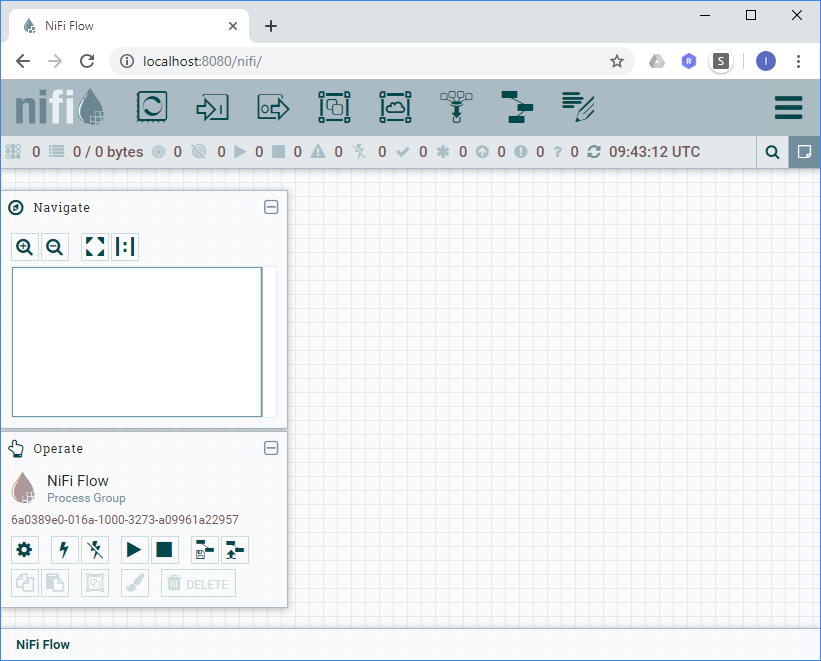
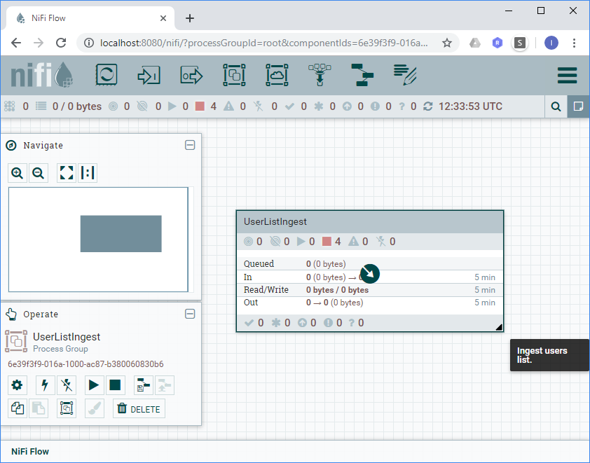
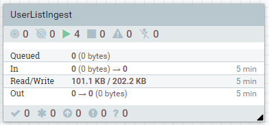

In this lab we are going to explore how to use NiFi Builder by creating a NiFi data stream.
After completing this lab you should be able to:
To complete the lab, you are going to perform following activities:
In order to complete the lab, you need to have the following tools installed. I will also assume that you know how to use them. You can use any operating system - e.g. Windows, Linux or MacOS which supports the tools.
| Tool | Description | I am using... |
|---|---|---|
| Python 3.6 or newer | NiFi Builder is written in Python and needs Python installed in order to run. | 3.6.5 |
| Docker 18 or newer | We are going to use Docker to run NiFi sandbox. Although this is the recommended approach, it is not required that you use Docker. You can use any NiFi instance available to you. | 18.09.0 |
| Git client | We are using git to install NiFi Builder from GitHub/Bitbucket. | GitScm |
| Terminal shell | In this lab I am using PowerShell. It is readily available in Windows 10. It is also available for Linux or Mac OS for free. If you prefer, you could use any compatible terminal shell, e.g. bash on Linux. | PowerShell |
| Code editor | You can use any text editor or IDE you are comfortable with. | Notepad++ |
| Operating System | Windows, Linux or MacOS | Windows 10 |
| Web Browser | Chrome, Safari, Edge, etc. | Chrome |
From the support-files, you can download a PowerShell script, containing all the commands from this lab commands from the support-files.
Here is a list of all support files:
| File Name | Description |
|---|---|
| acquire-random-users.conf.nifib.json | Configuration file for NiFi Builder. |
| acquire-random-users.def.nifib.json | Stream definition for NiFi Builder - complete stream |
| acquire-random-users-hardcoded.def.nifib.json | Stream definition for NiFi Builder - complete stream with hardcoded configuration. |
| acquire-random-users-varsandexpressionlanguage.def.nifib.json | Stream definition for NiFi Builder - complete stream with example, using expression language and variable manipulation. |
| lab-commands.ps1 | PowerShell script, containing all the commands from the lab. |
| sdp_tpl_AcquireHTTP.xml | NiFi template for acquiring data from HTTP endpoint. |
| sdp_tpl_StoreFile.xml | NiFi template for storing files in a local file system. |
| template.def.nifib.json | Template stream definition for an empty NiFi Builder stream. |
In this activity we are going to install NiFi Builder and see how you can get help on the usage of the NiFi Builder command line parameters.
Create a root directory LAB_ROOT directory for the lab:
PS> $labRoot="C:/Sandbox/NiFiBuilderLab"PS> mkdir -p $labRootPS> cd $labRootAbove commands are going to create an empty directory. The name of the directory is stored in a PowerShell variable, named $labRoot. We are going to put all the artifacts, used in this lab, under the $labRoot directory.
Clone the NiFi Builder repository from GitHub
xxxxxxxxxxPS> git clone https://github.com/vancun/nifi_factoryHere is a sample output:
xxxxxxxxxxCloning into 'nifi_factory'...remote: Enumerating objects: 167, done.remote: Counting objects: 100% (167/167), done.remote: Compressing objects: 100% (102/102), done.remote: Total 167 (delta 69), reused 151 (delta 53), pack-reused 0Receiving objects: 100% (167/167), 599.40 KiB | 1.72 MiB/s, done.Resolving deltas: 100% (69/69), done.
With this step you will clone the master branch of the NiFi Builder repository.
Test your installation: Run the following command to test the NiFi Builder is correctly installed.
xxxxxxxxxxPS> python nifi_factory/bin/nifi-builder.pyBecause you didn't supply any parameters, this should show the short usage information:
xxxxxxxxxxusage: nifi-builder.py [-h] [-u NIFI_URL] [-c CONFIG_FILE] [-o][--bind-port BIND_PORT]filenamenifi-builder.py: error: the following arguments are required: filename
Get help on command line parameters
You can use the -h command line option to get extended usage information:
xxxxxxxxxxPS> python nifi_factory/bin/nifi-builder.py -hThis is very useful in case you do not know the exact command line argument or are not sure how it is used.
xusage: nifi-builder.py [-h] [-u NIFI_URL] [-c CONFIG_FILE] [-o][--bind-port BIND_PORT]filenameNiFi Flow Builderpositional arguments:filenameoptional arguments:-h, --help show this help message and exit-u NIFI_URL, --nifi-url NIFI_URLURL for the NiFi server. Default URL:http://localhost:8080-c CONFIG_FILE, --config-file CONFIG_FILEAdditional json configuration file.-o, --overwrite Overwrite existing pipeline.--bind-port BIND_PORT
In this activity we are going to setup a running standalone NiFi instance. The instance will run as a sandbox inside a Docker container.
Create a Docker container
WARNING! Following command will download huge files (more than 1GB) from Internet. Make sure you are not on a metered Internet connection.
Because NiFi Execute the following command in a bash terminal:
xxxxxxxxxxPS> docker run --rm -d -p 8080:8080 --name nifibuilderlab apache/nifi:1.8.0In this command we used following docker arguments:
| Argument | Purpose |
|---|---|
run | Create a container from the specified image and run it. |
--rm | Automatically remove the container after it is stopped. Very useful for sandbox environments. |
-d | Detach. Run the container in background and print the container ID. Used for daemons. |
-p 8080:8080 | Port 8080 from the container will be mapped to port 8080 on the host machine. |
--name nifibuilderlab | Give the container a name nifibuilderlab |
apache/nifi:1.8.0 | Docker image name. If the image doesn't exist locally, it will be downloaded from Docker hub along with all the dependencies. |
Explore NiFi Environment Variables
Execute following command:
xxxxxxxxxxPS> docker exec -ti nifibuilderlab bash -c "env | grep NIFI"The command will list all the environment variables in the NiFi container, related to NiFi environment (which have NIFI in the name):
xxxxxxxxxxNIFI_HOME=/opt/nifi/nifi-currentNIFI_LOG_DIR=/opt/nifi/nifi-current/logsNIFI_TOOLKIT_HOME=/opt/nifi/nifi-toolkit-currentNIFI_PID_DIR=/opt/nifi/nifi-current/runNIFI_BASE_DIR=/opt/nifi
This might be useful if you need to interact with NiFi inside the container.
Open a web browser, e.g. Chrome
Navigate to NiFi
Enter following URL in the Chrome address bar:
xxxxxxxxxxhttp://localhost:8080/nifi
The browser should show an empty NiFi Flow:

To accomplish the lab, upload following NiFi templates from the support files:
Create a basic template descriptor and save it as a JSON file lab/acquire-random-users.def.nifib.jsonunder the lab root folder. The template content is also available in the file template.def.nifib.json from the support files:
xxxxxxxxxx{ "name": "UserListIngest", "description": "Ingest users list.", "properties": { }, "pipeline": { "steps": [ ] }}Some points worth to note:
The name of the file is not significant, but it is a good practice to follow naming conventions which could help to easily identify and structure your projects. I used three suffixes:
.def to indicate the purpose of the file. This is a stream definition file..nifib to indicate the application. This is a NiFi Builder file..json to indicate the file format. This is a JSON file.The descriptor you created is complete. If you run the NiFi Builder with it, it will create an empty stream.
NiFi Builder will create a Process Group, named UserListIngest. It is used as a container for the stream steps.
Steps are defined by the steps array.
The properties map gives us a way to assign properties directly to NiFi processors. Using this feature violates good design practices and should be used only if there is no other option.
Add Acquire step to the stream definition:
xxxxxxxxxx{ "name": "Acquire", "type": "sdp_tpl_AcquireHTTP", "description": "Acquire user list HTTP endpoint." "variables": { "sdp_flow_filename": "user-list.json" }}This definition instructs NiFi Builder to create a step, using the sdp_tpl_AcquireHTTP template. The step is wrapped in a NiFi Process Group. NiFi Builder will update the Process Group as follows:
null, NiFi will remove the variable.Define following properties to be updated in the properties section:
xxxxxxxxxx"properties": { "UserListIngest/Acquire/GetHTTP": { "URL": "http://randomuser.me/api/?format=json&results=100&seed=abcde" }}We need to specify a URL for the source endpoint. Normally we would use a variable, but this would cause NiFi processor validation to fail, due to the implementation which would require in this case to create SSL context. This makes a case where NiFi processor properties feature is needed. Another use case is when we need to specify sensitive properties.
Add Store step to the stream definition:
xxxxxxxxxx{ "name": "Store", "type": "sdp_tpl_StoreFile", "description": "Store files in the data platform storage.", "variables": { "sdp_dl_root": "/tmp/datalake", "sdp_source_id": "NiFiBuilderLab", "sdp_dataset_id": "RandomUser" }}NiFi builder will create a new step, called Store, using the sdp_tpl_StoreFile. The step will be configured to store the files in the /tmp/datalake folder.
The template, follows the storage structure convention:
${sdp_dl_root}/LANDING/${sdp_source_id}/${sdp_dataset_id}/INBOX
We specify the corresponding variables. In big systems, the Store step might be shared among multiple streams. In this case it would be a good idea to tag the flow files with corresponding attributes.
Save and verify the stream definition.
Here is a complete stream definition file lab/acquire-random-users.def.nifib.json. You can download the definition file ready for use from the support files:
xxxxxxxxxx{ "name": "UserListIngest", "description": "Ingest users list.", "properties": { "UserListIngest/Acquire/GetHTTP": { "URL": "http://randomuser.me/api/?format=json&results=100&seed=abcde" } }, "pipeline": { "steps": [ { "name": "Acquire", "type": "sdp_tpl_AcquireHTTP", "description": "Acquire user list HTTP endpoint.", "variables": { "sdp_flow_filename": "user-list.json" } }, { "name": "Store", "type": "sdp_tpl_StoreFile", "description": "Store files in the data platform storage.", "variables": { "sdp_dl_root": "/tmp/datalake", "sdp_source_id": "NiFiBuilderLab", "sdp_dataset_id": "RandomUser" } } ] }}
In this activity we created a complete NiFi stream definition. The stream is going to:
Read user list from HTTP endpoint
http://randomuser.me/api/?format=json&results=100&seed=abcde
Store the user list as a file named user-list.json inside the NiFi docker container into a directory
/tmp/datalake/LANDING/NiFiBuilderLab/RandomUser/INBOX/
The lab root folder should have following content:
xxxxxxxxxx/+-- lab+-- acquire-random-users.def.nifib.json+-- nifi_factory# ... as checked out from GitHub ...
The flow definition contains hard-coded configuration strings, mixed with flow definition. You might want to structure your application so that you group configuration settings by environment, store sensitive parameters into a security vault, share settings between streams, flows, etc.
This is a point for improvement. We will see one way how this could be improved by using configuration file in a later activity.
Open a shell session
Make sure you are in the lab root folder:
xxxxxxxxxx$labRoot="C:/Sandbox/NiFiBuilderLab"cd $labRootStart NiFi Builder, specifying the stream definition you have created earlier:
x
PS> python nifi_factory\bin\nifi-builder.py ` lab\acquire-random-users.def.nifib.jsonNormally running NiFi Builder should show some debug information.
Navigate to NiFi UI: http://localhost:8080/nifi

Start the stream:

Stop the stream
Go to the shell and check the user list has been acquired and ingested:
xxxxxxxxxxPS> docker exec -ti nifibuilderlab bash ` -c "cat /tmp/datalake/LANDING/NiFiBuilderLab/RandomUser/INBOX/*"The output is pretty verbose so I am not going to share it here. It presents the list of users in JSON format. You can see the expected output by opening the HTTP endpoint in a web browser.
We have our NiFi stream created by NiFi builder.
If you run NiFi builder, using the same command line, it will fail as the stream already exists. You have two choices:
Manually delete the flow and re-run NiFi builder
Re-run NiFi builder, adding -o or --overwrite . This will force NiFi Builder to first delete the stream and than create a new one. NiFi Builder will try to place the new stream at the same place on the NiFi Flow canvas.
x
PS> python nifi_factory\bin\nifi-builder.py -o ` lab\acquire-random-users.def.nifib.json
Make sure the stream is stopped and you have navigated your NiFi UI to the root level.
Clear the data lake storage so that you could observe clear result:
xxxxxxxxxxPS> docker exec -ti nifibuilderlab bash -c "rm -rf /tmp/datalake"This command will remove the datalake folder and all its contents, including subfolders.
Create a NiFi Builder configuration file lab/acquire-random-users.config.nifib.json, extracting hardcoded configuration values. You can also download the configuration file from the support files.
xxxxxxxxxx{ "parameters": { "sdp_p_datalake_root": "/tmp/datalake", "sdp_p_nifibuilderlab_id": "NiFiBuilderLab", "sdp_p_nifibuilderlab_userlist_id": "RandomUser", "sdp_p_nifibuilderlab_userlist_url": "http://randomuser.me/api/?format=json&results=100&seed=abcde", "sdp_p_nifibuilderlab_userlist_filename": "user-list.json" }}
Modify the stream definition so that it refers to configuration parameters, instead of hardcoded values (see acquire-random-users.def.nifib.json from the support files).
Run NiFi Builder, specifying the stream definition and the configuration file. As already mentioned, the -o option forces NiFi Builder to overwrite the stream if it already exists:
xxxxxxxxxxPS> python nifi_factory\bin\nifi-builder.py -o ` -c lab\acquire-random-users.conf.nifib.json ` lab\acquire-random-users.def.nifib.jsonRefresh the NiFi UI, explore and execute the stream. Verify the output.
Sometimes you might need to specify that a value needs to be a NiFi Expression Language expression. NiFi expression language starts with a dollar sign and is enclosed in curly braces, for example: ${now()}. NiFi builder uses curly braces for specifying value replacement.
To get curly braces in the output, you need to double them. In the NiFi Expression Language example, this would look the following way:
xxxxxxxxxx${{now()}}
For training purposes, let's modify our stream definition (updated flow definition could be downloaded from the support files):
sdp_flow_filename variable from the Acquire step into a stream-level variableFilename attribute of the GetHTTP processor to use an expression language, refering to the sdp_flow_filename variable.Add variables section to the flow definition:
x
"variables": { "sdp_flow_filename": "{sdp_p_nifibuilderlab_userlist_filename}"}This will create a stream-level variable, named sdp_flow_filename.
Set the sdp_flow_filename variable from the Acquire step to null:
x
"variables": { "sdp_flow_filename": null}This will cause that NiFi removes the variable definition from the step Process Group variables registry.
Add property value to be updated:
x
"UserListIngest/Acquire/GetHTTP": { "URL": "{sdp_p_nifibuilderlab_userlist_url}", "Filename": "${{sdp_flow_filename}}"}Clean the datalake folder:
xxxxxxxxxxPS> docker exec -ti nifibuilderlab bash -c "rm -rf /tmp/datalake"Start NiFi Builder:
xxxxxxxxxxpython nifi_factory\bin\nifi-builder.py -o ` -c lab\acquire-random-users.conf.nifib.json ` lab\acquire-random-users.def.nifib.json
Explore the generated stream:
sdp_flow_filename has been created and value is assigned.sdp_flow_filename has been removed.
You will still see it, but it will be with scope UserListIngest , i.e. defined at stream-level.Filename is assigned a value of ${sdp_flow_filename}Start the stream in NiFi and verify the ingestion result:
x
PS> docker exec -ti nifibuilderlab bash ` -c "cat /tmp/datalake/LANDING/NiFiBuilderLab/RandomUser/INBOX/* | head -n 3"
This step is optional. You should be very careful when deleting resources (files, docker images etc.).
Stop the docker container. Docker will automatically remove it:
xxxxxxxxxxPS> docker stop nifibuilderlabList docker images and copy the downloaded NiFi docker image ID (it occupies 1.83GB on my hard drive):
xxxxxxxxxxPS> docker image lsxxxxxxxxxxREPOSITORY TAG IMAGE ID CREATED SIZEapache/nifi 1.8.0 6c3cb8a4ae0e 6 months ago 1.83GB
Delete the NiFi docker image:
xxxxxxxxxxPS> docker image rm 6c3cb8a4ae0e
Remove the lab root folder and subfolders
xxxxxxxxxxPS> rm -Recurse -Force lab $labRootIf you are using bash, you should use:
xxxxxxxxxx$ rm -rf $labRoot